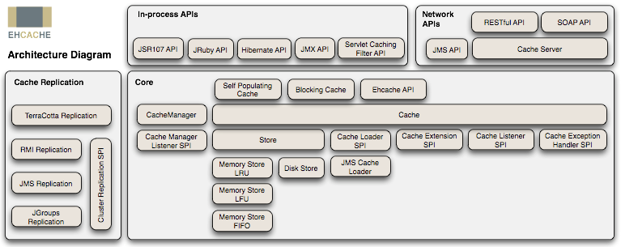

2019 03 18 缓存那些事
本文转载自美团技术团队——缓存那些事，对目前常用的缓存算法、缓存工具做了翔实的介绍。
一般而言，现在互联网应用（网站或App）的整体流程，可以概括如图1所示，用户请求从界面（浏览器或App界面）到网络转发、应用服务再到存储（数据库或文件系统），然后返回到界面呈现内容。
随着互联网的普及，内容信息越来越复杂，用户数和访问量越来越大，我们的应用需要支撑更多的并发量，同时我们的应用服务器和数据库服务器所做的计算也越来越多。但是往往我们的应用服务器资源是有限的，且技术变革是缓慢的，数据库每秒能接受的请求次数也是有限的（或者文件的读写也是有限的），如何能够有效利用有限的资源来提供尽可能大的吞吐量？一个有效的办法就是引入缓存，打破标准流程，每个环节中请求可以从缓存中直接获取目标数据并返回，从而减少计算量，有效提升响应速度，让有限的资源服务更多的用户。
如图1所示，缓存的使用可以出现在1～4的各个环节中，每个环节的缓存方案与使用各有特点。

缓存也是一个数据模型对象，那么必然有它的一些特征：
命中率 命中率=返回正确结果数/请求缓存次数，命中率问题是缓存中的一个非常重要的问题，它是衡量缓存有效性的重要指标。命中率越高，表明缓存的使用率越高。
最大元素（或最大空间） 缓存中可以存放的最大元素的数量，一旦缓存中元素数量超过这个值（或者缓存数据所占空间超过其最大支持空间），那么将会触发缓存启动清空策略根据不同的场景合理的设置最大元素值往往可以一定程度上提高缓存的命中率，从而更有效的时候缓存。
清空策略 如上描述，缓存的存储空间有限制，当缓存空间被用满时，如何保证在稳定服务的同时有效提升命中率？这就由缓存清空策略来处理，设计适合自身数据特征的清空策略能有效提升命中率。常见的一般策略有：
-
FIFO(first in first out) 先进先出策略，最先进入缓存的数据在缓存空间不够的情况下（超出最大元素限制）会被优先被清除掉，以腾出新的空间接受新的数据。策略算法主要比较缓存元素的创建时间。在数据实效性要求场景下可选择该类策略，优先保障最新数据可用。
-
LFU(less frequently used) 最少使用策略，无论是否过期，根据元素的被使用次数判断，清除使用次数较少的元素释放空间。策略算法主要比较元素的hitCount（命中次数）。在保证高频数据有效性场景下，可选择这类策略。
-
LRU(least recently used) 最近最少使用策略，无论是否过期，根据元素最后一次被使用的时间戳，清除最远使用时间戳的元素释放空间。策略算法主要比较元素最近一次被get使用时间。在热点数据场景下较适用，优先保证热点数据的有效性。
除此之外，还有一些简单策略比如：
- 根据过期时间判断，清理过期时间最长的元素；
- 根据过期时间判断，清理最近要过期的元素；
- 随机清理；
- 根据关键字（或元素内容）长短清理等。
虽然从硬件介质上来看，无非就是内存和硬盘两种，但从技术上，可以分成内存、硬盘文件、数据库。
- 内存：将缓存存储于内存中是最快的选择，无需额外的I/O开销，但是内存的缺点是没有持久化落地物理磁盘，一旦应用异常break down而重新启动，数据很难或者无法复原。
- 硬盘：一般来说，很多缓存框架会结合使用内存和硬盘，在内存分配空间满了或是在异常的情况下，可以被动或主动的将内存空间数据持久化到硬盘中，达到释放空间或备份数据的目的。
- 数据库：前面有提到，增加缓存的策略的目的之一就是为了减少数据库的I/O压力。现在使用数据库做缓存介质是不是又回到了老问题上了？🙁其实，数据库也有很多种类型，像那些不支持SQL，只是简单的key-value存储结构的特殊数据库（如BerkeleyDB和Redis），响应速度和吞吐量都远远高于我们常用的关系型数据库等。
缓存有各类特征，而且有不同介质的区别，那么实际工程中我们怎么去对缓存分类呢？在目前的应用服务框架中，比较常见的，时根据缓存雨应用的藕合度，分为local cache（本地缓存）和remote cache（分布式缓存）：
- 本地缓存：指的是在应用中的缓存组件，其最大的优点是应用和cache是在同一个进程内部，请求缓存非常快速，没有过多的网络开销等，在单应用不需要集群支持或者集群情况下各节点无需互相通知的场景下使用本地缓存较合适；同时，它的缺点也是应为缓存跟应用程序耦合，多个应用程序无法直接的共享缓存，各应用或集群的各节点都需要维护自己的单独缓存，对内存是一种浪费。
- 分布式缓存：指的是与应用分离的缓存组件或服务，其最大的优点是自身就是一个独立的应用，与本地应用隔离，多个应用可直接的共享缓存。
目前各种类型的缓存都活跃在成千上万的应用服务中，还没有一种缓存方案可以解决一切的业务场景或数据类型，我们需要根据自身的特殊场景和背景，选择最适合的缓存方案。缓存的使用是程序员、架构师的必备技能，好的程序员能根据数据类型、业务场景来准确判断使用何种类型的缓存，如何使用这种缓存，以最小的成本最快的效率达到最优的目的。
本地缓存
编程直接实现缓存
个别场景下，我们只需要简单的缓存数据的功能，而无需关注更多存取、清空策略等深入的特性时，直接编程实现缓存则是最便捷和高效的。
a. 成员变量或局部变量实现
简单代码示例如下：
public void UseLocalCache(){
//一个本地的缓存变量
Map<String, Object> localCacheStoreMap = new HashMap<String, Object>();
List<Object> infosList = this.getInfoList();
for(Object item:infosList){
if(localCacheStoreMap.containsKey(item)){ //缓存命中 使用缓存数据
// todo
} else { // 缓存未命中 IO获取数据，结果存入缓存
Object valueObject = this.getInfoFromDB();
localCacheStoreMap.put(valueObject.toString(), valueObject);
}
}
}
//示例
private List<Object> getInfoList(){
return new ArrayList<Object>();
}
//示例数据库IO获取
private Object getInfoFromDB(){
return new Object();
}
以局部变量map结构缓存部分业务数据，减少频繁的重复数据库I/O操作。缺点仅限于类的自身作用域内，类间无法共享缓存。
b.静态变量实现
最常用的单例实现静态资源缓存，代码示例如下：
public class CityUtils {
private static final HttpClient httpClient = ServerHolder.createClientWithPool();
private static Map<Integer, String> cityIdNameMap = new HashMap<Integer, String>();
private static Map<Integer, String> districtIdNameMap = new HashMap<Integer, String>();
static {
HttpGet get = new HttpGet("http://gis-in.sankuai.com/api/location/city/all");
BaseAuthorizationUtils.generateAuthAndDateHeader(get,
BaseAuthorizationUtils.CLIENT_TO_REQUEST_MDC,
BaseAuthorizationUtils.SECRET_TO_REQUEST_MDC);
try {
String resultStr = httpClient.execute(get, new BasicResponseHandler());
JSONObject resultJo = new JSONObject(resultStr);
JSONArray dataJa = resultJo.getJSONArray("data");
for (int i = 0; i < dataJa.length(); i++) {
JSONObject itemJo = dataJa.getJSONObject(i);
cityIdNameMap.put(itemJo.getInt("id"), itemJo.getString("name"));
}
} catch (Exception e) {
throw new RuntimeException("Init City List Error!", e);
}
}
static {
HttpGet get = new HttpGet("http://gis-in.sankuai.com/api/location/district/all");
BaseAuthorizationUtils.generateAuthAndDateHeader(get,
BaseAuthorizationUtils.CLIENT_TO_REQUEST_MDC,
BaseAuthorizationUtils.SECRET_TO_REQUEST_MDC);
try {
String resultStr = httpClient.execute(get, new BasicResponseHandler());
JSONObject resultJo = new JSONObject(resultStr);
JSONArray dataJa = resultJo.getJSONArray("data");
for (int i = 0; i < dataJa.length(); i++) {
JSONObject itemJo = dataJa.getJSONObject(i);
districtIdNameMap.put(itemJo.getInt("id"), itemJo.getString("name"));
}
} catch (Exception e) {
throw new RuntimeException("Init District List Error!", e);
}
}
public static String getCityName(int cityId) {
String name = cityIdNameMap.get(cityId);
if (name == null) {
name = "未知";
}
return name;
}
public static String getDistrictName(int districtId) {
String name = districtIdNameMap.get(districtId);
if (name == null) {
name = "未知";
}
return name;
}
}
O2O业务中常用的城市基础基本信息判断，通过静态变量一次获取缓存内存中，减少频繁的I/O读取，静态变量实现类间可共享，进程内可共享，缓存的实时性稍差。
为了解决本地缓存数据的实时性问题，目前大量使用的是结合ZooKeeper的自动发现机制，实时变更本地静态变量缓存：
美团内部的基础配置组件MtConfig，采用的就是类似原理，使用静态变量缓存，结合ZooKeeper的统一管理，做到自动动态更新缓存，如图2所示。

这类缓存实现，优点是能直接在heap区内读写，最快也最方便；缺点同样是受heap区域影响，缓存的数据量非常有限，同时缓存时间受GC影响。主要满足单机场景下的小数据量缓存需求，同时对缓存数据的变更无需太敏感感知，如上一般配置管理、基础静态数据等场景。
Ehcache
Ehcache是现在最流行的纯Java开源缓存框架，配置简单、结构清晰、功能强大，是一个非常轻量级的缓存实现，我们常用的Hibernate里面就集成了相关缓存功能。

从图3中我们可以了解到，Ehcache的核心定义主要包括：
-
cache manager：缓存管理器，以前是只允许单例的，不过现在也可以多实例了。
-
cache：缓存管理器内可以放置若干cache，存放数据的实质，所有cache都实现了Ehcache接口，这是一个真正使用的缓存实例；通过缓存管理器的模式，可以在单个应用中轻松隔离多个缓存实例，独立服务于不同业务场景需求，缓存数据物理隔离，同时需要时又可共享使用。
-
element：单条缓存数据的组成单位。
-
system of record(SOR)：可以取到真实数据的组件，可以是真正的业务逻辑、外部接口调用、存放真实数据的数据库等，缓存就是从SOR中读取或者写入到SOR中去的。
在上层可以看到，整个Ehcache提供了对JSR、JMX等的标准支持，能够较好的兼容和移植，同时对各类对象有较完善的监控管理机制。它的缓存介质涵盖堆内存（heap）、堆外内存（BigMemory商用版本支持）和磁盘，各介质可独立设置属性和策略。Ehcache最初是独立的本地缓存框架组件，在后期的发展中，结合Terracotta服务阵列模型，可以支持分布式缓存集群，主要有RMI、JGroups、JMS和Cache Server等传播方式进行节点间通信，如图3的左侧部分描述。
整体数据流转包括这样几类行为:
- Flush：缓存条目向低层次移动。
- Fault：从低层拷贝一个对象到高层。在获取缓存的过程中，某一层发现自己的该缓存条目已经失效，就触发了Fault行为。
- Eviction：把缓存条目除去。
- Expiration：失效状态。
- Pinning：强制缓存条目保持在某一层。
图4反映了数据在各个层之间的流转，同时也体现了各层数据的一个生命周期。

Ehcache的XML配置使用如下：
<ehcache>
<!-- 指定一个文件目录，当Ehcache把数据写到硬盘上时，将把数据写到这个文件目录下 -->
<diskStore path="java.io.tmpdir"/>
<!-- 设定缓存的默认数据过期策略 -->
<defaultCache
maxElementsInMemory="10000"
eternal="false"
overflowToDisk="true"
timeToIdleSeconds="0"
timeToLiveSeconds="0"
diskPersistent="false"
diskExpiryThreadIntervalSeconds="120"/>
<!--
设定具体的命名缓存的数据过期策略
cache元素的属性：
name：缓存名称
maxElementsInMemory：内存中最大缓存对象数
maxElementsOnDisk：硬盘中最大缓存对象数，若是0表示无穷大
eternal：true表示对象永不过期，此时会忽略timeToIdleSeconds和timeToLiveSeconds属性，默认为false
overflowToDisk：true表示当内存缓存的对象数目达到了maxElementsInMemory界限后，会把溢出的对象写到硬盘缓存中。注意：如果缓存的对象要写入到硬盘中的话，则该对象必须实现了Serializable接口才行。
diskSpoolBufferSizeMB：磁盘缓存区大小，默认为30MB。每个Cache都应该有自己的一个缓存区。
diskPersistent：是否缓存虚拟机重启期数据
diskExpiryThreadIntervalSeconds：磁盘失效线程运行时间间隔，默认为120秒
timeToIdleSeconds： 设定允许对象处于空闲状态的最长时间，以秒为单位。当对象自从最近一次被访问后，如果处于空闲状态的时间超过了timeToIdleSeconds属性值，这个对象就会过期，EHCache将把它从缓存中清空。只有当eternal属性为false，该属性才有效。如果该属性值为0，则表示对象可以无限期地处于空闲状态
timeToLiveSeconds：设定对象允许存在于缓存中的最长时间，以秒为单位。当对象自从被存放到缓存中后，如果处于缓存中的时间超过了 timeToLiveSeconds属性值，这个对象就会过期，Ehcache将把它从缓存中清除。只有当eternal属性为false，该属性才有效。如果该属性值为0，则表示对象可以无限期地存在于缓存中。timeToLiveSeconds必须大于timeToIdleSeconds属性，才有意义
memoryStoreEvictionPolicy：当达到maxElementsInMemory限制时，Ehcache将会根据指定的策略去清理内存。可选策略有：LRU（最近最少使用，默认策略）、FIFO（先进先出）、LFU（最少访问次数）。
-->
<cache name="CACHE1"
maxElementsInMemory="1000"
eternal="true"
overflowToDisk="true"/>
<cache name="CACHE2"
maxElementsInMemory="1000"
eternal="false"
timeToIdleSeconds="200"
timeToLiveSeconds="4000"
overflowToDisk="true"/>
</ehcache>
整体上看，Ehcache的使用还是相对简单便捷的，提供了完整的各类API接口。需要注意的是，虽然Ehcache支持磁盘的持久化，但是由于存在两级缓存介质，在一级内存中的缓存，如果没有主动的刷入磁盘持久化的话，在应用异常down机等情形下，依然会出现缓存数据丢失，为此可以根据需要将缓存刷到磁盘，将缓存条目刷到磁盘的操作可以通过cache.flush()方法来执行，需要注意的是，对于对象的磁盘写入，前提是要将对象进行序列化。
主要特性
- 快速，针对大型高并发系统场景，Ehcache的多线程机制有相应的优化改善。
- 简单，很小的jar包，简单配置就可直接使用，单机场景下无需过多的其他服务依赖。
- 支持多种的缓存策略，灵活。
- 缓存数据有两级：内存和磁盘，与一般的本地内存缓存相比，有了磁盘的存储空间，将可以支持更大量的数据缓存需求。
- 具有缓存和缓存管理器的侦听接口，能更简单方便的进行缓存实例的监控管理。
- 支持多缓存管理器实例，以及一个实例的多个缓存区域。
注意：Ehcache的超时设置主要是针对整个cache实例设置整体的超时策略，而没有较好的处理针对单独的key的个性的超时设置（有策略设置，但是比较复杂，就不描述了），因此，在使用中要注意过期失效的缓存元素无法被GC回收，时间越长缓存越多，内存占用也就越大，内存泄露的概率也越大。
Guava Cache
Guava Cache是Google开源的Java重用工具集库Guava里的一款缓存工具，其主要实现的缓存功能有：
- 自动将entry节点加载进缓存结构中；
- 当缓存的数据超过设置的最大值时，使用
LRU算法移除； - 具备根据entry节点上次被访问或者写入时间计算它的过期机制；
- 缓存的key被封装在
WeakReference引用内； - 缓存的Value被封装在WeakReference或
SoftReference引用内； - 统计缓存使用过程中命中率、异常率、未命中率等
统计数据。
Guava Cache的架构设计灵感来源于ConcurrentHashMap，我们前面也提到过，简单场景下可以自行编码通过hashmap来做少量数据的缓存，但是，如果结果可能随时间改变或者是希望存储的数据空间可控的话，自己实现这种数据结构还是有必要的。
Guava Cache继承了ConcurrentHashMap的思路，使用多个segments方式的细粒度锁，在保证线程安全的同时，支持高并发场景需求。Cache类似于Map，它是存储键值对的集合，不同的是它还需要处理evict、expire、dynamic load等算法逻辑，需要一些额外信息来实现这些操作。对此，根据面向对象思想，需要做方法与数据的关联封装。如图5所示cache的内存数据模型，可以看到，使用ReferenceEntry接口来封装一个键值对，而用ValueReference来封装Value值，之所以用Reference命令，是因为Cache要支持WeakReference Key和SoftReference、WeakReference value。

ReferenceEntry是对一个键值对节点的抽象，它包含了key和值的ValueReference抽象类，Cache由多个Segment组成，而每个Segment包含一个ReferenceEntry数组，每个ReferenceEntry数组项都是一条ReferenceEntry链，且一个ReferenceEntry包含key、hash、valueReference、next字段。除了在ReferenceEntry数组项中组成的链，在一个Segment中，所有ReferenceEntry还组成access链（accessQueue）和write链（writeQueue）（后面会介绍链的作用）。ReferenceEntry可以是强引用类型的key，也可以WeakReference类型的key，为了减少内存使用量，还可以根据是否配置了expireAfterWrite、expireAfterAccess、maximumSize来决定是否需要write链和access链确定要创建的具体Reference：StrongEntry、StrongWriteEntry、StrongAccessEntry、StrongWriteAccessEntry等。
对于ValueReference，因为Cache支持强引用的Value、SoftReference Value以及WeakReference Value，因而它对应三个实现类：StrongValueReference、SoftValueReference、WeakValueReference。为了支持动态加载机制，它还有一个LoadingValueReference，在需要动态加载一个key的值时，先把该值封装在LoadingValueReference中，以表达该key对应的值已经在加载了，如果其他线程也要查询该key对应的值，就能得到该引用，并且等待改值加载完成，从而保证该值只被加载一次，在该值加载完成后，将LoadingValueReference替换成其他ValueReference类型。ValueReference对象中会保留对ReferenceEntry的引用，这是因为在Value因为WeakReference、SoftReference被回收时，需要使用其key将对应的项从Segment的table中移除。
WriteQueue和AccessQueue ：为了实现最近最少使用算法，Guava Cache在Segment中添加了两条链：write链（writeQueue）和access链（accessQueue），这两条链都是一个双向链表，通过ReferenceEntry中的previousInWriteQueue、nextInWriteQueue和previousInAccessQueue、nextInAccessQueue链接而成，但是以Queue的形式表达。WriteQueue和AccessQueue都是自定义了offer、add（直接调用offer）、remove、poll等操作的逻辑，对offer（add）操作，如果是新加的节点，则直接加入到该链的结尾，如果是已存在的节点，则将该节点链接的链尾；对remove操作，直接从该链中移除该节点；对poll操作，将头节点的下一个节点移除，并返回。
了解了cache的整体数据结构后，再来看下针对缓存的相关操作就简单多了：
-
Segment中的evict清除策略操作，是在每一次调用操作的开始和结束时触发清理工作，这样比一般的缓存另起线程监控清理相比，可以减少开销，但如果长时间没有调用方法的话，会导致不能及时的清理释放内存空间的问题。evict主要处理四个Queue：
-
keyReferenceQueue
- valueReferenceQueue
- writeQueue
- accessQueue
前两个queue是因为WeakReference、SoftReference被垃圾回收时加入的，清理时只需要遍历整个queue，将对应的项从LocalCache中移除即可，这里keyReferenceQueue存放ReferenceEntry，而valueReferenceQueue存放的是ValueReference，要从Cache中移除需要有key，因而ValueReference需要有对ReferenceEntry的引用，这个前面也提到过了。而对后面两个Queue，只需要检查是否配置了相应的expire时间，然后从头开始查找已经expire的Entry，将它们移除即可。
- Segment中的put操作：put操作相对比较简单，首先它需要获得锁，然后尝试做一些清理工作，接下来的逻辑类似ConcurrentHashMap中的rehash，查找位置并注入数据。需要说明的是当找到一个已存在的Entry时，需要先判断当前的ValueRefernece中的值事实上已经被回收了，因为它们可以是WeakReference、SoftReference类型，如果已经被回收了，则将新值写入。并且在每次更新时注册当前操作引起的移除事件，指定相应的原因：COLLECTED、REPLACED等，这些注册的事件在退出的时候统一调用Cache注册的RemovalListener，由于事件处理可能会有很长时间，因而这里将事件处理的逻辑在退出锁以后才做。最后，在更新已存在的Entry结束后都尝试着将那些已经expire的Entry移除。另外put操作中还需要更新writeQueue和accessQueue的语义正确性。
- Segment带CacheLoader的get操作：1. 先查找table中是否已存在没有被回收、也没有expire的entry，如果找到，并在CacheBuilder中配置了refreshAfterWrite，并且当前时间间隔已经操作这个事件，则重新加载值，否则，直接返回原有的值；2. 如果查找到的ValueReference是LoadingValueReference，则等待该LoadingValueReference加载结束，并返回加载的值；3. 如果没有找到entry，或者找到的entry的值为null，则加锁后，继续在table中查找已存在key对应的entry，如果找到并且对应的entry.isLoading()为true，则表示有另一个线程正在加载，因而等待那个线程加载完成，如果找到一个非null值，返回该值，否则创建一个LoadingValueReference，并调用loadSync加载相应的值，在加载完成后，将新加载的值更新到table中，即大部分情况下替换原来的LoadingValueReference。
Guava Cache提供Builder模式的CacheBuilder生成器来创建缓存的方式，十分方便，并且各个缓存参数的配置设置，类似于函数式编程的写法，可自行设置各类参数选型。它提供三种方式加载到缓存中。分别是：
- 在构建缓存的时候，使用build方法内部调用CacheLoader方法加载数据；
- callable 、callback方式加载数据；
- 使用粗暴直接的方式，直接Cache.put 加载数据，但自动加载是首选的，因为它可以更容易的推断所有缓存内容的一致性。
build生成器的两种方式都实现了一种逻辑：从缓存中取key的值，如果该值已经缓存过了则返回缓存中的值，如果没有缓存过可以通过某个方法来获取这个值，不同的地方在于cacheloader的定义比较宽泛，是针对整个cache定义的，可以认为是统一的根据key值load value的方法，而callable的方式较为灵活，允许你在get的时候指定load方法。使用示例如下：
/**
* CacheLoader
*/
public void loadingCache()
{
LoadingCache<String, String> graphs =CacheBuilder.newBuilder()
.maximumSize(1000).build(new CacheLoader<String, String>()
{
@Override
public String load(String key) throws Exception
{
System.out.println("key:"+key);
if("key".equals(key)){
return "key return result";
}else{
return "get-if-absent-compute";
}
}
});
String resultVal = null;
try {
resultVal = graphs.get("key");
} catch (ExecutionException e) {
e.printStackTrace();
}
System.out.println(resultVal);
}
/**
*
* Callable
*/
public void callablex() throws ExecutionException
{
Cache<String, String> cache = CacheBuilder.newBuilder()
.maximumSize(1000).build();
String result = cache.get("key", new Callable<String>()
{
public String call()
{
return "result";
}
});
System.out.println(result);
}
总体来看，Guava Cache基于ConcurrentHashMap的优秀设计借鉴，在高并发场景支持和线程安全上都有相应的改进策略，使用Reference引用命令，提升高并发下的数据……访问速度并保持了GC的可回收，有效节省空间；同时，write链和access链的设计，能更灵活、高效的实现多种类型的缓存清理策略，包括基于容量的清理、基于时间的清理、基于引用的清理等；编程式的build生成器管理，让使用者有更多的自由度，能够根据不同场景设置合适的模式。
分布式缓存
memcached缓存
memcached是应用较广的开源分布式缓存产品之一，它本身其实不提供分布式解决方案。在服务端，memcached集群环境实际就是一个个memcached服务器的堆积，环境搭建较为简单；cache的分布式主要是在客户端实现，通过客户端的路由处理来达到分布式解决方案的目的。客户端做路由的原理非常简单，应用服务器在每次存取某key的value时，通过某种算法把key映射到某台memcached服务器nodeA上，因此这个key所有操作都在nodeA上，结构图如图6、图7所示。

memcached客户端采用一致性hash算法作为路由策略，如图7，相对于一般hash（如简单取模）的算法，一致性hash算法除了计算key的hash值外，还会计算每个server对应的hash值，然后将这些hash值映射到一个有限的值域上（比如0~2^32）。通过寻找hash值大于hash(key)的最小server作为存储该key数据的目标server。如果找不到，则直接把具有最小hash值的server作为目标server。同时，一定程度上，解决了扩容问题，增加或删除单个节点，对于整个集群来说，不会有大的影响。最近版本，增加了虚拟节点的设计，进一步提升了可用性。
memcached是一个高效的分布式内存cache，了解memcached的内存管理机制，才能更好的掌握memcached，让我们可以针对我们数据特点进行调优，让其更好的为我所用。我们知道memcached仅支持基础的key-value键值对类型数据存储。在memcached内存结构中有两个非常重要的概念：slab和chunk。如图8所示。
slab是一个内存块，它是memcached一次申请内存的最小单位。在启动memcached的时候一般会使用参数-m指定其可用内存，但是并不是在启动的那一刻所有的内存就全部分配出去了，只有在需要的时候才会去申请，而且每次申请一定是一个slab。Slab的大小固定为1M（1048576 Byte），一个slab由若干个大小相等的chunk组成。每个chunk中都保存了一个item结构体、一对key和value。
虽然在同一个slab中chunk的大小相等的，但是在不同的slab中chunk的大小并不一定相等，在memcached中按照chunk的大小不同，可以把slab分为很多种类（class），默认情况下memcached把slab分为40类（class1～class40），在class 1中，chunk的大小为80字节，由于一个slab的大小是固定的1048576字节（1M），因此在class1中最多可以有13107个chunk（也就是这个slab能存最多13107个小于80字节的key-value数据）。
memcached内存管理采取预分配、分组管理的方式，分组管理就是我们上面提到的slab class，按照chunk的大小slab被分为很多种类。内存预分配过程是怎样的呢？向memcached添加一个item时候，memcached首先会根据item的大小，来选择最合适的slab class：例如item的大小为190字节，默认情况下class 4的chunk大小为160字节显然不合适，class 5的chunk大小为200字节，大于190字节，因此该item将放在class 5中（显然这里会有10字节的浪费是不可避免的），计算好所要放入的chunk之后，memcached会去检查该类大小的chunk还有没有空闲的，如果没有，将会申请1M（1个slab）的空间并划分为该种类chunk。例如我们第一次向memcached中放入一个190字节的item时，memcached会产生一个slab class 2（也叫一个page），并会用去一个chunk，剩余5241个chunk供下次有适合大小item时使用，当我们用完这所有的5242个chunk之后，下次再有一个在160～200字节之间的item添加进来时，memcached会再次产生一个class 5的slab（这样就存在了2个pages）。
总结来看，memcached内存管理需要注意的几个方面：
- chunk是在page里面划分的，而page固定为1m，所以chunk最大不能超过1m。
- chunk实际占用内存要加48B，因为chunk数据结构本身需要占用48B。
- 如果用户数据大于1m，则memcached会将其切割，放到多个chunk内。
- 已分配出去的page不能回收。
对于
key-value信息，最好不要超过1m的大小；同时信息长度最好相对是比较均衡稳定的，这样能够保障最大限度的使用内存；同时，memcached采用的LRU清理策略，合理甚至过期时间，提高命中率。
无特殊场景下，key-value能满足需求的前提下，使用memcached分布式集群是较好的选择，搭建与操作使用都比较简单；分布式集群在单点故障时，只影响小部分数据异常，目前还可以通过Magent缓存代理模式，做单点备份，提升高可用；整个缓存都是基于内存的，因此响应时间是很快，不需要额外的序列化、反序列化的程序，但同时由于基于内存，数据没有持久化，集群故障重启数据无法恢复。高版本的memcached已经支持CAS模式的原子操作，可以低成本的解决并发控制问题。
Redis缓存
Redis是一个远程内存数据库（非关系型数据库），性能强劲，具有复制特性以及解决问题而生的独一无二的数据模型。它可以存储键值对与5种不同类型的值之间的映射，可以将存储在内存的键值对数据持久化到硬盘，可以使用复制特性来扩展读性能，还可以使用客户端分片来扩展写性能。

如图9，Redis内部使用一个redisObject对象来标识所有的key和value数据，redisObject最主要的信息如图所示：type代表一个value对象具体是何种数据类型，encoding是不同数据类型在Redis内部的存储方式，比如——type=string代表value存储的是一个普通字符串，那么对应的encoding可以是raw或是int，如果是int则代表世界Redis内部是按数值类型存储和表示这个字符串。
图9左边的raw列为对象的编码方式：字符串可以被编码为raw（一般字符串）或Rint（为了节约内存，Redis会将字符串表示的64位有符号整数编码为整数来进行储存）；列表可以被编码为ziplist或linkedlist，ziplist是为节约大小较小的列表空间而作的特殊表示；集合可以被编码为intset或者hashtable，intset是只储存数字的小集合的特殊表示；hash表可以编码为zipmap或者hashtable，zipmap是小hash表的特殊表示；有序集合可以被编码为ziplist或者skiplist格式，ziplist用于表示小的有序集合，而skiplist则用于表示任何大小的有序集合。
从网络I/O模型上看，Redis使用单线程的I/O复用模型，自己封装了一个简单的AeEvent事件处理框架，主要实现了epoll、kqueue和select。对于单纯只有I/O操作来说，单线程可以将速度优势发挥到最大，但是Redis也提供了一些简单的计算功能，比如排序、聚合等，对于这些操作，单线程模型实际会严重影响整体吞吐量，CPU计算过程中，整个I/O调度都是被阻塞住的，在这些特殊场景的使用中，需要额外的考虑。相较于memcached的预分配内存管理，Redis使用现场申请内存的方式来存储数据，并且很少使用free-list等方式来优化内存分配，会在一定程度上存在内存碎片。Redis跟据存储命令参数，会把带过期时间的数据单独存放在一起，并把它们称为临时数据，非临时数据是永远不会被剔除的，即便物理内存不够，导致swap也不会剔除任何非临时数据（但会尝试剔除部分临时数据）。
我们描述Redis为内存数据库，作为缓存服务，大量使用内存间的数据快速读写，支持高并发大吞吐；而作为数据库，则是指Redis对缓存的持久化支持。Redis由于支持了非常丰富的内存数据库结构类型，如何把这些复杂的内存组织方式持久化到磁盘上？Redis的持久化与传统数据库的方式差异较大，Redis一共支持四种持久化方式，主要使用的两种：
- 定时快照方式(snapshot)：该持久化方式实际是在Redis内部一个定时器事件，每隔固定时间去检查当前数据发生的改变次数与时间是否满足配置的持久化触发的条件，如果满足则通过操作系统fork调用来创建出一个子进程，这个子进程默认会与父进程共享相同的地址空间，这时就可以通过子进程来遍历整个内存来进行存储操作，而主进程则仍然可以提供服务，当有写入时由操作系统按照内存页（page）为单位来进行copy-on-write保证父子进程之间不会互相影响。它的缺点是快照只是代表一段时间内的内存映像，所以系统重启会丢失上次快照与重启之间所有的数据。
- 基于语句追加文件的方式(aof)：aof方式实际类似MySQl的基于语句的binlog方式，即每条会使Redis内存数据发生改变的命令都会追加到一个log文件中，也就是说这个log文件就是Redis的持久化数据。
aof的方式的主要缺点是追加log文件可能导致体积过大，当系统重启恢复数据时如果是aof的方式则加载数据会非常慢，几十G的数据可能需要几小时才能加载完，当然这个耗时并不是因为磁盘文件读取速度慢，而是由于读取的所有命令都要在内存中执行一遍。另外由于每条命令都要写log，所以使用aof的方式，Redis的读写性能也会有所下降。
Redis的持久化使用了Buffer I/O，所谓Buffer I/O是指Redis对持久化文件的写入和读取操作都会使用物理内存的Page Cache，而大多数数据库系统会使用Direct I/O来绕过这层Page Cache并自行维护一个数据的Cache。而当Redis的持久化文件过大（尤其是快照文件），并对其进行读写时，磁盘文件中的数据都会被加载到物理内存中作为操作系统对该文件的一层Cache，而这层Cache的数据与Redis内存中管理的数据实际是重复存储的。虽然内核在物理内存紧张时会做Page Cache的剔除工作，但内核很可能认为某块Page Cache更重要，而让你的进程开始Swap，这时你的系统就会开始出现不稳定或者崩溃了，因此在持久化配置后，针对内存使用需要实时监控观察。
与memcached客户端支持分布式方案不同，Redis更倾向于在服务端构建分布式存储，如图10、11。
Redis Cluster是一个实现了分布式且允许单点故障的Redis高级版本，它没有中心节点，具有线性可伸缩的功能。如图11，其中节点与节点之间通过二进制协议进行通信，节点与客户端之间通过ascii协议进行通信。在数据的放置策略上，Redis Cluster将整个key的数值域分成4096个hash槽，每个节点上可以存储一个或多个hash槽，也就是说当前Redis Cluster支持的最大节点数就是4096。Redis Cluster使用的分布式算法也很简单：crc16( key ) % HASH_SLOTS_NUMBER。整体设计可总结为：
- 数据hash分布在
不同的Redis节点实例上； - M/S的切换采用Sentinel；
- 写：只会写
master Instance，从sentinel获取当前的master Instance； - 读：从Redis Node中
基于权重选取一个Instance读取，失败/超时则轮询其他Instance；Redis本身就很好的支持读写- 分离，在单进程的I/O场景下，可以有效的避免主库的阻塞风险； - 通过RPC服务访问，RPC server端封装了Redis客户端，客户端基于Jedis开发。
以看到，通过集群+主从结合的设计，Redis在扩展和稳定高可用性能方面都是比较成熟的。但是，在数据一致性问题上，Redis没有提供CAS操作命令来保障高并发场景下的数据一致性问题，不过它却提供了事务的功能，Redis的Transactions提供的并不是严格的ACID的事务（比如一串用EXEC提交执行的命令，在执行中服务器宕机，那么会有一部分命令执行了，剩下的没执行）。但是这个Transactions还是提供了基本的命令打包执行的功能（在服务器不出问题的情况下，可以保证一连串的命令是顺序在一起执行的，中间有会有其它客户端命令插进来执行）。Redis还提供了一个Watch功能，你可以对一个key进行Watch，然后再执行Transactions，在这过程中，如果这个Watched的值进行了修改，那么这个Transactions会发现并拒绝执行。
在失效策略上，Redis支持多大6种的数据淘汰策略：
- volatile-lru：从已设置过期时间的数据集（server.db[i].expires）中挑选最近最少使用的数据淘汰；
- volatile-ttl：从已设置过期时间的数据集（server.db[i].expires）中挑选将要过期的数据淘汰；
- volatile-random：从已设置过期时间的数据集（server.db[i].expires）中任意选择数据淘汰 ；
- allkeys-lru：从数据集（server.db[i].dict）中挑选最近最少使用的数据淘汰；
- allkeys-random：从数据集（server.db[i].dict）中任意选择数据淘汰；
- no-enviction（驱逐）：禁止驱逐数据。
个人总结了以下多种Web应用场景，在这些场景下可以充分的利用Redis的特性，大大提高效率。
- 在主页中显示最新的项目列表：Redis使用的是常驻内存的缓存，速度非常快。LPUSH用来插入一个内容ID，作为关键字存储在列表头部。LTRIM用来限制列表中的项目数最多为5000。如果用户需要的检索的数据量超越这个缓存容量，这时才需要把请求发送到数据库。
- 删除和过滤：如果一篇文章被删除，可以使用LREM从缓存中彻底清除掉。
- 排行榜及相关问题：排行榜（leader board）按照得分进行排序。ZADD命令可以直接实现这个功能，而ZREVRANGE命令可以用来按照得分来获取前100名的用户，ZRANK可以用来获取用户排名，非常直接而且操作容易。
- 按照用户投票和时间排序：排行榜，得分会随着时间变化。LPUSH和LTRIM命令结合运用，把文章添加到一个列表中。一项后台任务用来获取列表，并重新计算列表的排序，ZADD命令用来按照新的顺序填充生成列表。列表可以实现非常快速的检索，即使是负载很重的站点。
- 过期项目处理：使用Unix时间作为关键字，用来保持列表能够按时间排序。对current_time和time_to_live进行检索，完成查找过期项目的艰巨任务。另一项后台任务使用ZRANGE…WITHSCORES进行查询，删除过期的条目。
- 计数：进行各种数据统计的用途是非常广泛的，比如想知道什么时候封锁一个IP地址。INCRBY命令让这些变得很容易，通过原子递增保持计数；GETSET用来重置计数器；过期属性用来确认一个关键字什么时候应该删除。
- 特定时间内的特定项目：这是特定访问者的问题，可以通过给每次页面浏览使用SADD命令来解决。SADD不会将已经存在的成员添加到一个集合。
- Pub/Sub：在更新中保持用户对数据的映射是系统中的一个普遍任务。Redis的pub/sub功能使用了SUBSCRIBE、UNSUBSCRIBE和PUBLISH命令，让这个变得更加容易。
- 队列：在当前的编程中队列随处可见。除了push和pop类型的命令之外，Redis还有阻塞队列的命令，能够让一个程序在执行时被另一个程序添加到队列。
实际工程中，对于缓存的应用可以有多种的实战方式，包括侵入式硬编码、抽象服务化应用以及轻量的注解式使用等。本文将主要介绍下注解式方式。
Spring注解缓存
Spring 3.1之后，引入了注解缓存技术，其本质上不是一个具体的缓存实现方案，而是一个对缓存使用的抽象，通过在既有代码中添加少量自定义的各种annotation，即能够达到使用缓存对象和缓存方法的返回对象的效果。Spring的缓存技术具备相当的灵活性，不仅能够使用SpEL(Spring Expression Language)来定义缓存的key和各种condition，还提供开箱即用的缓存临时存储方案，也支持和主流的专业缓存集成。其特点总结如下：
- 少量的配置annotation注释即可使得既有代码支持缓存；
- 支持开箱即用，不用安装和部署额外的第三方组件即可使用缓存；
- 支持Spring Express Language（SpEL），能使用对象的任何属性或者方法来定义缓存的key和使用规则条件；
- 支持自定义key和自定义缓存管理者，具有相当的灵活性和可扩展性。
和Spring的事务管理类似，Spring Cache的关键原理就是Spring AOP，通过Spring AOP实现了在方法调用前、调用后获取方法的入参和返回值，进而实现了缓存的逻辑。而Spring Cache利用了Spring AOP的动态代理技术，即当客户端尝试调用pojo的foo()方法的时候，给它的不是pojo自身的引用，而是一个动态生成的代理类。
如图12所示，实际客户端获取的是一个代理的引用，在调用foo()方法的时候，会首先调用proxy的foo()方法，这个时候proxy可以整体控制实际的pojo.foo()方法的入参和返回值，比如缓存结果，比如直接略过执行实际的foo()方法等，都是可以轻松做到的。Spring Cache主要使用三个注释标签，即@Cacheable、@CachePut和@CacheEvict，主要针对方法上注解使用，部分场景也可以直接类上注解使用，当在类上使用时，该类所有方法都将受影响。我们总结一下其作用和配置方法，如表1所示。
| 标签类型 | 作用 | 主要配置参数说明 |
|---|---|---|
| @Cacheable | 主要针对方法配置，能够根据方法的请求参数对其结果进行缓存 | value：缓存的名称，在 Spring 配置文件中定义，必须指定至少一个； key：缓存的 key，可以为空，如果指定要按照 SpEL 表达式编写，如果不指定，则默认按照方法的所有参数进行组合； condition：缓存的条件，可以为空，使用 SpEL 编写，返回 true 或者 false，只有为 true 才进行缓存 |
| @CachePut | 主要针对方法配置，能够根据方法的请求参数对其结果进行缓存，和 @Cacheable 不同的是，它每次都会触发真实方法的调用 | value：缓存的名称，在 spring 配置文件中定义，必须指定至少一个; key：缓存的 key，可以为空，如果指定要按照 SpEL 表达式编写，如果不指定，则默认按照方法的所有参数进行组合； condition：缓存的条件，可以为空，使用 SpEL 编写，返回 true 或者 false，只有为 true 才进行缓存 |
| @CacheEvict | 主要针对方法配置，能够根据一定的条件对缓存进行清空 | value：缓存的名称，在 Spring 配置文件中定义，必须指定至少一个； key：缓存的 key，可以为空，如果指定要按照 SpEL 表达式编写，如果不指定，则默认按照方法的所有参数进行组合； condition：缓存的条件，可以为空，使用 SpEL 编写，返回 true 或者 false，只有为 true 才进行缓存； allEntries：是否清空所有缓存内容，默认为 false，如果指定为 true，则方法调用后将立即清空所有缓存； beforeInvocation：是否在方法执行前就清空，默认为 false，如果指定为 true，则在方法还没有执行的时候就清空缓存，默认情况下，如果方法执行抛出异常，则不会清空缓存 |
可扩展支持：Spring注解cache能够满足一般应用对缓存的需求，但随着应用服务的复杂化，大并发高可用性能要求下，需要进行一定的扩展，这时对其自身集成的缓存方案可能不太适用，该怎么办？Spring预先有考虑到这点，那么怎样利用Spring提供的扩展点实现我们自己的缓存，且在不改变原来已有代码的情况下进行扩展？是否在方法执行前就清空，默认为false，如果指定为true，则在方法还没有执行的时候就清空缓存，默认情况下，如果方法执行抛出异常，则不会清空缓存。
这基本能够满足一般应用对缓存的需求，但现实总是很复杂，当你的用户量上去或者性能跟不上，总需要进行扩展，这个时候你或许对其提供的内存缓存不满意了，因为其不支持高可用性，也不具备持久化数据能力，这个时候，你就需要自定义你的缓存方案了，还好，Spring也想到了这一点。
我们先不考虑如何持久化缓存，毕竟这种第三方的实现方案很多，我们要考虑的是，怎么利用Spring提供的扩展点实现我们自己的缓存，且在不改原来已有代码的情况下进行扩展。这需要简单的三步骤：
- 首先需要提供一个CacheManager接口的实现（继承至
AbstractCacheManager），管理自身的cache实例； - 其次，实现自己的cache实例MyCache(继承至Cache)，在这里面
引入我们需要的第三方cache或自定义cache； - 最后就是对配置项进行声明，将MyCache实例注入
CacheManager进行统一管理。
酒店商家端自定义注解缓存
注解缓存的使用，可以有效增强应用代码的可读性，同时统一管理缓存，提供较好的可扩展性，为此，酒店商家端在Spring注解缓存基础上，自定义了适合自身业务特性的注解缓存。
主要使用两个标签，即@HotelCacheable、@HotelCacheEvict，其作用和配置方法见表2。
| 标签类型 | 作用 | 主要配置参数说明 |
|---|---|---|
| @HotelCacheable | 主要针对方法配置，能够根据方法的请求参数对其结果进行缓存 | domain：作用域，针对集合场景，解决批量更新问题； domainKey：作用域对应的缓存key； key：缓存对象key 前缀； fieldKey：缓存对象key，与前缀合并生成对象key； condition：缓存获取前置条件，支持spel语法； cacheCondition：缓存刷入前置条件，支持spel语法； expireTime：超时时间设置 |
| @HotelCacheEvict | 主要针对方法配置，能够根据一定的条件对缓存进行清空 | 同上 |
增加作用域的概念，解决商家信息变更下，多重重要信息实时更新的问题。
如图13，按旧的方案，当cache0发送变化时，为了保持信息的实时更新，需要手动删除cache1、cache2、cache3等相关处的缓存数据。增加域缓存概念，cache0、cache1、cache2、cache3是以账号ID为基础，相互存在影响约束的集合体，我们作为一个域集合，增加域缓存处理，当cache0发送变化时，整体的账号ID domain域已发生更新，自动影响cache1、cache2、cache3等处的缓存数据。将相关联逻辑缓存统一化，有效提升代码可读性，同时更好服务业务，账号重点信息能够实时变更刷新，相关服务响应速度提升。
另外，增加了cacheCondition缓存刷入前置判断，有效解决商家业务多重外部依赖场景下，业务降级有损服务下，业务数据一致性保证，不因为缓存的增加影响业务的准确性；自定义CacheManager缓存管理器，可以有效兼容公共基础组件Medis、Cellar相关服务，在对应用程序不做改动的情况下，有效切换缓存方式；同时，统一的缓存服务AOP入口，结合接入Mtconfig统一配置管理，对应用内缓存做好降级准备，一键关闭缓存。几点建议：
- 上面介绍过Spring Cache的原理是基于动态生成的proxy代理机制来进行切面处理，关键点是对象的引用问题，如果对象的方法是类里面的内部调用（this引用）而不是外部引用的场景下，会导致proxy失败，那么我们所做的缓存切面处理也就失效了。因此，应避免已注解缓存的方法在类里面的内部调用。
- 使用的key约束，缓存的key应尽量使用简单的可区别的元素，如ID、名称等，不能使用list等容器的值，或者使用整体model对象的值。非public方法无法使用注解缓存实现。
总之，注释驱动的Spring Cache能够极大的减少我们编写常见缓存的代码量，通过少量的注释标签和配置文件，即可达到使代码具备缓存的能力，且具备很好的灵活性和扩展性。但是我们也应该看到，Spring Cache由于基于Spring AOP技术，尤其是动态的proxy技术，导致其不能很好的支持方法的内部调用或者非public方法的缓存设置，当然这些都是可以解决的问题。
明辉，美团酒旅事业群酒店住宿研发团队B端商家业务平台负责人，主导构建商家业务平台系统，支撑美团酒店住宿业务的飞速发展需求。曾任职于联想集团、百度。